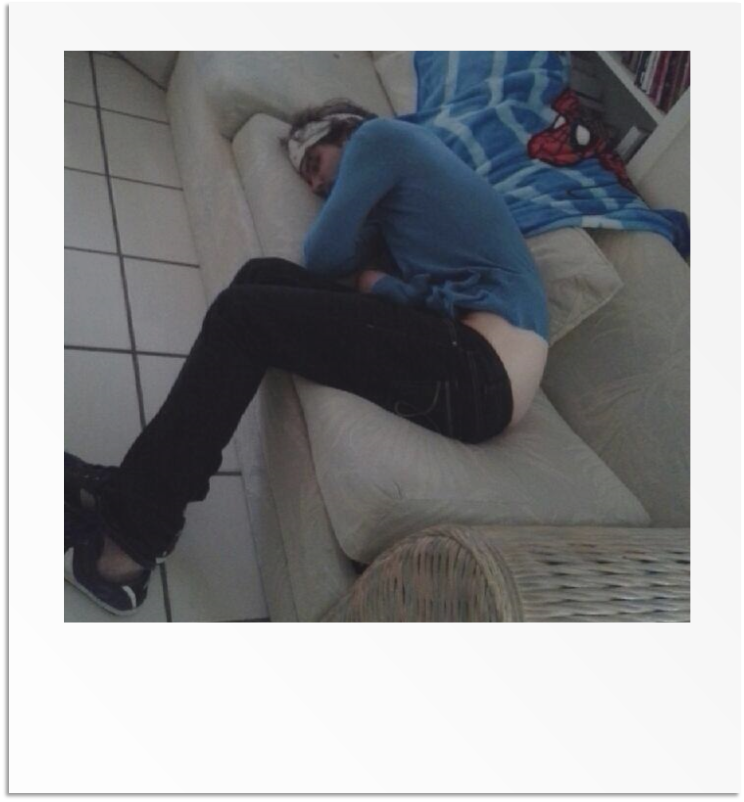

What's it going to be like my first time? 
We recently did a free workshop for local artists on how to go on tour. To get an idea of what it's like to have a truly successful first run, we asked Bo Campbell from touring Florida band In Motion:
"So, steps to leave on tour... What are the things that really matter? And what are the things don't matter as much as they think?"

Bo: For me... personally being ready in all facets. Like, focused on what you're about to undertake. Not the performing, but the time away from home, the not knowing what may come, and being cool with that. Getting yourself excited for each opportunity that's about to come. Kind of "clear your mind" of everything, but knowing you're about to get go play your music. Things that don't matter that much? Idk. Really, like, I tried my best to not worry about how the shows would go--bad or good--because you never know what's going to happen at the venue or driving to it. So--jumping back--mental preparation is key to me. More so then "do I have enough cables, strings blah blah blah." You can find those while you're out and about. I think it's more about what's important vs "there's not much that isn't." For a successful run, and a fun one. Money-wise you should already be prepared on all bases regardless of what venues say they'll pay. So, really, it comes back around to preparation. Before pulling out of the driveway. Mentally being focused on having a good time and taking it one show at a time. Not worrying about all of the bad things that can happen. If those things do happen, knowing it's not the end of the world and having a plan to adapt. High and calm spirits go a long way towards everything, and before you know it you're back home and just had a killer time. Don't worry about where you're going to sleep. You're in a vehicle--if it comes down to it--that you can sleep in. Idk--I feel like I just told you a bunch and didn't give you anything to use. And I've only done it once.”
Want to book a tour yourself? Check out this article on one artist's approach from the ASCAP website.